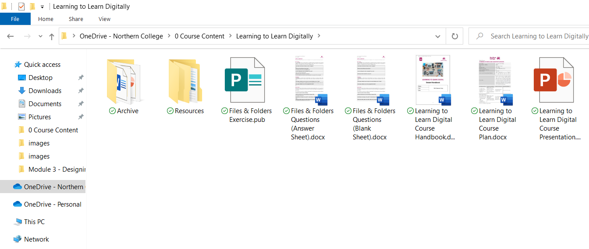

Section
Files
What are files?
When we save something onto a computer, we save it into a file. A file is something that contains data, and is opened with a app. When you open a file with an app, the app coverts the data into something that we can see and understand.
File Types
Different apps save their data in different ways, so there are lots of different file types. You can tell a file type by its icon, or the image used to represent it on a computer. Icons usually indicate which app is used to open it.
Take a look at the different file types below.
Microsoft Word
A Word file contains text and sometimes images; a Word file is usually a written document, like a letter, a CV, or an application form. It is opened by the Microsoft Word app.
JPEG
A JPEG file is an image file, the data it contains will make up a picture. Lots of apps open JPEG files; one of the more common apps in Microsoft Paint.
MP4
An MP4 file is a video file and it will contain a video clip; anything from a home recording to an entire film. MP4 files can be opened by several apps, usually those that play media.
HTML
An HTML file contains the code for a webpage. When it is opened with a web-browser like Google Chrome, it will display a webpage.
Microsoft Excel
An Excel file is a spreadsheet, it contains mainly numbers which are displayed, and calculated, when opened with Microsoft Excel. Excel files are used for all kinds of things that involve numbers, such as accounting and data analysis.
Text File
A text file (also known as a TXT file) contains only text, and this text is not formatted (no bold, underline, fancy fonts, or anything like that). Text files are opened by apps like Notepad.
File Type Icons
Section
Folders
What are folders?
To organise our files on a computer, we can create something called a folder. Folders can contain files, as well as other folders.
Files in a folder usually have something in common. For example, files in a folder called Holiday Photos will likely contain photographs taken while on a holiday. A folder is a great way of organising files and making them easier to find and use.
Folders in Windows look like the icon below and will have a label telling you their name:
Holiday
Photographs
Folder Icon & Label
Opening Folders
When you double-click on a folder, you open it, and you will be able to see all the files and folders inside it. When someone asks you to open a folder, that is what they mean, double-click it to see what's inside.
Folders can also contain other folders; a folder within a folder is known as a subfolder.
When you open a folder, what you will see will be something like the image below.

Inside a Folder
Section
Folder Structures
What is a folder structure?
The way that you organise your folders is called a folder structure. The best folder structures are those that make sense to you as you are the one who will be using it. The phrase folder structure is also used generally to describe how you store your files and folders.
Meaningful names
Folder structures in which files and folders have sensible, meaningful names. For example, if you create a document to hold your CV, a meaningful name would be CV; if you create a folder to store your holiday photos, a meaningful name would be Holiday Photos.
Meaningful file and folder names makes finding the files that you need much easier.
Files in a folder usually have something in common. For example, files in a folder called Holiday Photos will likely contain photographs taken while on a holiday. A folder is a great way of organising files and making them easier to find and use.
The Root
All folder structures start from the physical device used to store data. This device might be a hard disk drive in your computer, a USB stick, or cloud storage such as OneDrive. This device, the starting point of the structure, is known as The Root.
A diagram of an example folder structure is shown below:

A Folder Structure
When you are ready, click on the link below to move onto the next section.